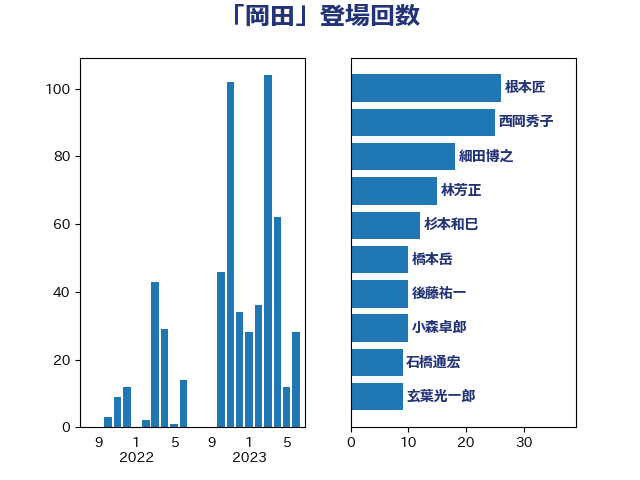

単語「岡田」

| 根本匠 | 自由民主党 | 26 回 |
| 西岡秀子 | 国民民主党 | 25 回 |
| 細田博之 | 自由民主党 | 18 回 |
| 林芳正 | 自由民主党 | 15 回 |
| 杉本和巳 | 日本維新の会 | 12 回 |
| 橋本岳 | 自由民主党 | 10 回 |
| 後藤祐一 | 立憲民主党 | 10 回 |
| 小森卓郎 | 自由民主党 | 10 回 |
| 石橋通宏 | 立憲民主党 | 9 回 |
| 玄葉光一郎 | 立憲民主党 | 9 回 |
| 太栄志 | 立憲民主党 | 9 回 |
| 古賀友一郎 | 自由民主党 | 9 回 |
| 酒井庸行 | 自由民主党 | 8 回 |
| 平木大作 | 公明党 | 8 回 |
| 岸真紀子 | 立憲民主党 | 8 回 |
| 岡田克也 | 立憲民主党 | 8 回 |
| 大西英男 | 自由民主党 | 8 回 |
| 塩田博昭 | 公明党 | 8 回 |
| 伊藤岳 | 日本共産党 | 8 回 |
| 鶴保庸介 | 自由民主党 | 7 回 |
| 猪瀬直樹 | 日本維新の会 | 7 回 |
| 海江田万里 | 立憲民主党 | 7 回 |
| 柳ヶ瀬裕文 | 日本維新の会 | 7 回 |
| 本庄知史 | 立憲民主党 | 7 回 |
| 岸田文雄 | 自由民主党 | 7 回 |
| 山岸一生 | 立憲民主党 | 7 回 |
| 坂本祐之輔 | 立憲民主党 | 7 回 |
| 豊田俊郎 | 自由民主党 | 6 回 |
| 自見はなこ | 自由民主党 | 6 回 |
| 田嶋要 | 立憲民主党 | 6 回 |
| 浜田聡 | NHK党 | 6 回 |
| 浜口誠 | 国民民主党 | 6 回 |
| 新垣邦男 | 立憲民主党 | 6 回 |
| 小沼巧 | 立憲民主党 | 6 回 |
| 城内実 | 自由民主党 | 6 回 |
| 高良鉄美 | 無所属 | 5 回 |
| 野村哲郎 | 自由民主党 | 5 回 |
| 芳賀道也 | 国民民主党 | 5 回 |
| 福田昭夫 | 立憲民主党 | 5 回 |
| 大島九州男 | れいわ新選組 | 5 回 |
| 和田義明 | 自由民主党 | 5 回 |
| 加田裕之 | 自由民主党 | 5 回 |
| 青柳陽一郎 | 立憲民主党 | 4 回 |
| 阿部司 | 日本維新の会 | 4 回 |
| 野田国義 | 立憲民主党 | 4 回 |
| 稲富修二 | 立憲民主党 | 4 回 |
| 松木けんこう | 立憲民主党 | 4 回 |
| 山下芳生 | 日本共産党 | 4 回 |
| 寺田稔 | 自由民主党 | 4 回 |
| 大西健介 | 立憲民主党 | 4 回 |
| 金城泰邦 | 公明党 | 3 回 |
| 道下大樹 | 立憲民主党 | 3 回 |
| 紙智子 | 日本共産党 | 3 回 |
| 篠原豪 | 立憲民主党 | 3 回 |
| 福山哲郎 | 立憲民主党 | 3 回 |
| 神谷裕 | 立憲民主党 | 3 回 |
| 矢倉克夫 | 公明党 | 3 回 |
| 横沢高徳 | 立憲民主党 | 3 回 |
| 松本尚 | 自由民主党 | 3 回 |
| 松本剛明 | 自由民主党 | 3 回 |
| 斉藤鉄夫 | 公明党 | 3 回 |
| 工藤彰三 | 自由民主党 | 3 回 |
| 山谷えり子 | 自由民主党 | 3 回 |
| 小西洋之 | 立憲民主党 | 3 回 |
| 保岡宏武 | 自由民主党 | 3 回 |
| 中谷真一 | 自由民主党 | 3 回 |
| 三原じゅん子 | 自由民主党 | 3 回 |
| 高木かおり | 日本維新の会 | 2 回 |
| 馬淵澄夫 | 立憲民主党 | 2 回 |
| 馬場伸幸 | 日本維新の会 | 2 回 |
| 長谷川英晴 | 自由民主党 | 2 回 |
| 長谷川岳 | 自由民主党 | 2 回 |
| 鈴木貴子 | 自由民主党 | 2 回 |
| 藤岡隆雄 | 立憲民主党 | 2 回 |
| 萩生田光一 | 自由民主党 | 2 回 |
| 田島麻衣子 | 立憲民主党 | 2 回 |
| 田中良生 | 自由民主党 | 2 回 |
| 片山さつき | 自由民主党 | 2 回 |
| 漆間譲司 | 日本維新の会 | 2 回 |
| 清水貴之 | 日本維新の会 | 2 回 |
| 津島淳 | 自由民主党 | 2 回 |
| 河野太郎 | 自由民主党 | 2 回 |
| 森屋宏 | 自由民主党 | 2 回 |
| 松野博一 | 自由民主党 | 2 回 |
| 末松信介 | 自由民主党 | 2 回 |
| 島尻安伊子 | 自由民主党 | 2 回 |
| 山本佐知子 | 自由民主党 | 2 回 |
| 小倉將信 | 自由民主党 | 2 回 |
| 宮下一郎 | 自由民主党 | 2 回 |
| 宗清皇一 | 自由民主党 | 2 回 |
| 堀井巌 | 自由民主党 | 2 回 |
| 高橋英明 | 日本維新の会 | 1 回 |
| 高市早苗 | 自由民主党 | 1 回 |
| 青柳仁士 | 日本維新の会 | 1 回 |
| 青山繁晴 | 自由民主党 | 1 回 |
| 長妻昭 | 立憲民主党 | 1 回 |
| 鈴木俊一 | 自由民主党 | 1 回 |
| 赤嶺政賢 | 日本共産党 | 1 回 |
| 谷合正明 | 公明党 | 1 回 |
| 西村智奈美 | 立憲民主党 | 1 回 |
| 西村康稔 | 自由民主党 | 1 回 |
| 菊田真紀子 | 立憲民主党 | 1 回 |
| 羽田次郎 | 立憲民主党 | 1 回 |
| 緑川貴士 | 立憲民主党 | 1 回 |
| 窪田哲也 | 公明党 | 1 回 |
| 石井正弘 | 自由民主党 | 1 回 |
| 牧野たかお | 自由民主党 | 1 回 |
| 牧島かれん | 自由民主党 | 1 回 |
| 水野素子 | 立憲民主党 | 1 回 |
| 比嘉奈津美 | 自由民主党 | 1 回 |
| 櫛渕万里 | れいわ新選組 | 1 回 |
| 森山浩行 | 立憲民主党 | 1 回 |
| 柿沢未途 | 無所属 | 1 回 |
| 柚木道義 | 立憲民主党 | 1 回 |
| 松川るい | 自由民主党 | 1 回 |
| 杉尾秀哉 | 立憲民主党 | 1 回 |
| 末松義規 | 立憲民主党 | 1 回 |
| 徳永エリ | 立憲民主党 | 1 回 |
| 平将明 | 自由民主党 | 1 回 |
| 岩谷良平 | 日本維新の会 | 1 回 |
| 山東昭子 | 自由民主党 | 1 回 |
| 山本順三 | 自由民主党 | 1 回 |
| 山崎誠 | 立憲民主党 | 1 回 |
| 山口俊一 | 自由民主党 | 1 回 |
| 山下貴司 | 自由民主党 | 1 回 |
| 宮本岳志 | 日本共産党 | 1 回 |
| 守島正 | 日本維新の会 | 1 回 |
| 奥野総一郎 | 立憲民主党 | 1 回 |
| 堀場幸子 | 日本維新の会 | 1 回 |
| 城井崇 | 立憲民主党 | 1 回 |
| 國場幸之助 | 自由民主党 | 1 回 |
| 和田政宗 | 自由民主党 | 1 回 |
| 古賀篤 | 自由民主党 | 1 回 |
| 勝部賢志 | 立憲民主党 | 1 回 |
| 佐藤信秋 | 自由民主党 | 1 回 |
| 住吉寛紀 | 日本維新の会 | 1 回 |
| 中西祐介 | 自由民主党 | 1 回 |
| 中司宏 | 日本維新の会 | 1 回 |
| 上野賢一郎 | 自由民主党 | 1 回 |
| 上田清司 | 国民民主党 | 1 回 |
| 上田勇 | 公明党 | 1 回 |
| 上杉謙太郎 | 自由民主党 | 1 回 |